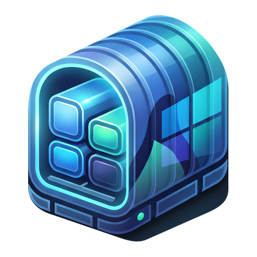

Feels like it belongs.
WinUI 3 controls, Mica, and light, dark, or Windows-managed appearance. A real Windows desktop app, not an embedded web UI.
BUILT FOR WINDOWS. POWERED BY WSLc.
Meet PodWin. A native Windows 11 home for WSLc container management, built with WinUI 3 and Fluent design.
FOUNDATION PREVIEW In development. No public installer yet.

A FAMILIAR PLACE TO START
A focused native shell for understanding your environment. Start with discovery, connect on your terms, and see what's actually there.
AN HONEST VIEW OF YOUR ENVIRONMENT
Interactive illustration with sample data. This is not a screenshot or a live runtime connection.
nginx:alpineexample-api:devpostgres:alpineSample local imageSample local imageSample local imageWinUI 3 controls, Mica, and light, dark, or Windows-managed appearance. A real Windows desktop app, not an embedded web UI.
Discover existing WSLc sessions before connecting. Connections require confirmation because even an inventory read can activate a session VM.
Browse containers and images, filter the list, and choose when to follow a container's logs. Errors stay visible, never disguised as empty results.
SMALL FOOTPRINT. CLEAR BOUNDARIES.
No surprise changes. Discovery never creates a session. You decide when PodWin creates its own session or pulls an image into it.
No app telemetry. Container logs stay in memory unless you choose to copy or save them. PodWin keeps its own redacted diagnostics on your device.
No compatibility theater. PodWin works with WSLc, not the Docker Engine socket. Compose execution is still on the roadmap.
THE ROAD AHEAD
Early software deserves clear expectations. Here's what the foundation supports, and what is still being built. No release dates promised.
Available features depend on your WSLc version. Kubernetes, Docker API compatibility, and full Docker Compose parity are not promised. Read the scope and limitations
A FEW THINGS WORTH KNOWING
Not yet. PodWin is a foundation preview with no public installer or Microsoft Store listing. Signing and clean-machine validation still come before a public release. The docs describe the current development workflow.
Not today. PodWin manages WSLc containers. It does not connect to Docker Engine, and Docker Desktop containers will not appear here.
Windows 11 22H2 or later on x64, with WSLc installed separately. The preview supports WSLc 3.0.3 and 3.0.4, with a smaller feature set on qualified Direct x64 hosts running 3.0.5. See the requirements.
PodWin is free to use and the app is licensed under Apache License 2.0. The project repository is currently private, so public source downloads are not available.
A NATIVE HOME FOR WHAT'S NEXT
Get to know the foundation, understand the boundaries,
and follow PodWin as it takes shape.
GitHub repository access is currently restricted. Contact PodWin for help or questions.